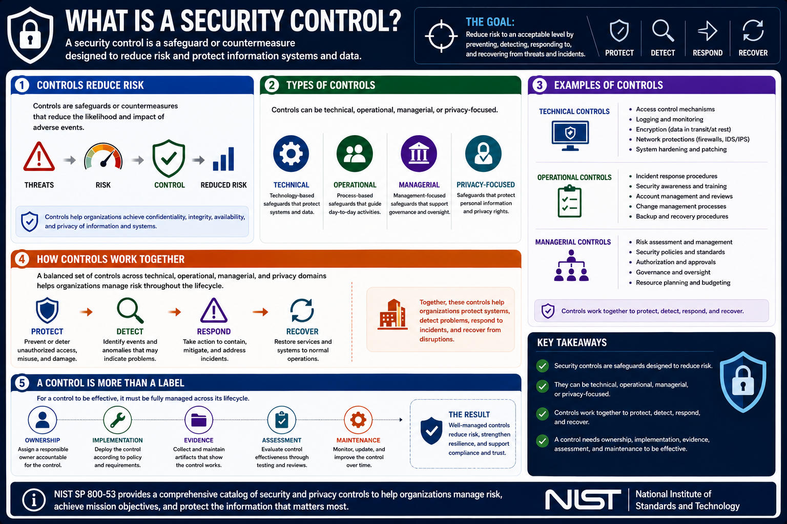

What Is NIST SP 800-53?
What Is a Security Control?
Connecting to LMS... Progress: in progress
Version 1.0 | Date: 2026-06-16 | Introductory overview of NIST SP 800-53 security and privacy controls.

Narration
A security control is a safeguard or countermeasure designed to reduce risk. Controls can be technical, operational, managerial, or privacy-focused.
Technical controls may include access control mechanisms, logging, encryption, network protections, and system hardening. Operational controls may include incident response procedures, training programs, and account reviews.
Managerial controls support governance, planning, risk assessment, authorization, and oversight. Together, these controls help organizations protect systems, detect problems, respond to incidents, and recover from disruptions.
A control is more than a label. It needs ownership, implementation, evidence, assessment, and maintenance to be useful in practice.